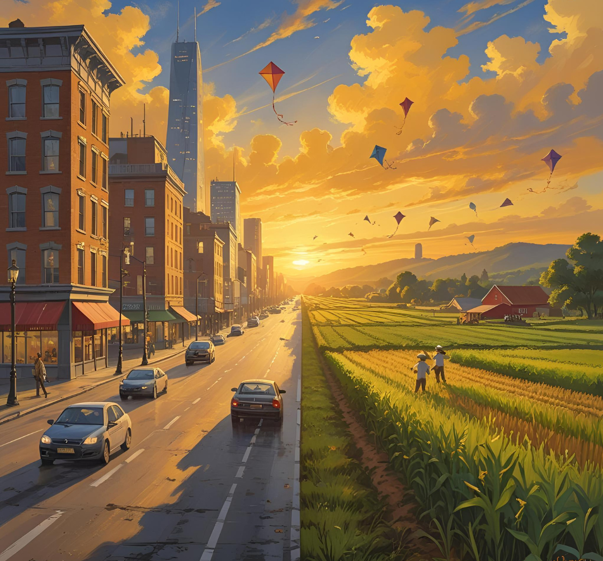
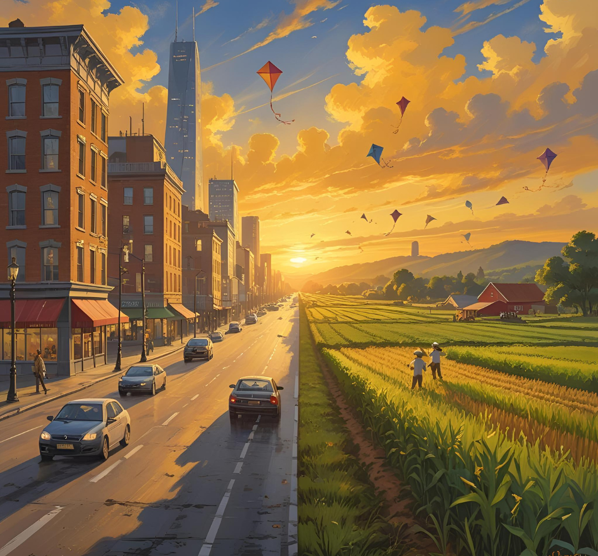

.jpg)

Da terra à sua cozinha: a origem do que comemos importa. Você já parou para pensar de onde vem o arroz, o café ou o tomate que consome todos os dias? Dos pequenos produtores rurais ao mercado da esquina, existe um caminho cheio de histórias e desafios. Por trás de cada alimento, há mãos que cultivam com cuidado. Ao valorizar produtos locais e sazonais, fortalecemos a economia regional e respeitamos o meio ambiente. Conecte-se com quem planta o que você consome: Conheça produtores locais ou veja dicas de consumo consciente

Receitas que contam histórias e atravessam gerações. Os sabores do campo carregam mais do que gosto: carregam memória, cultura e identidade. Das panelas de barro ao uso de ingredientes como mandioca, taioba e milho crioulo, a sabedoria ancestral continua viva. Na tradição está a inovação da cozinha brasileira. Esses saberes, muitas vezes invisíveis, hoje ganham espaço na gastronomia urbana e nos pratos autorais dos chefs contemporâneos. Experimente a cultura que alimenta: Descubra receitas tradicionais ou veja onde provar esses sabores na cidade

Tradições que aproximam: do interior para os corações urbanos. Feiras, festas juninas, romarias e festivais culturais: o campo celebra com força — e a cidade celebra junto. Esses momentos são mais do que festas: são encontros de saberes, sabores e afetos A cultura popular une o Brasil de ponta a ponta. O forró da roça embala o arraial da escola. O artesanato do interior ganha vitrine nos centros urbanos. Participe e celebre essa conexão: Confira o calendário de eventos ou conheça festas típicas na sua região

Histórias de quem vai, vem e transforma os dois mundos. Milhões de pessoas saíram do campo para a cidade — e muitas retornaram, em busca de uma nova vida. São famílias que carregam suas raízes, saberes e modos de viver, enriquecendo a cultura urbana. A migração constrói pontes entre passado, presente e futuro. Dos sotaques ao tempero da comida, do jeito de criar os filhos às formas de trabalho, tudo se mistura e transforma. Conheça essas histórias de vida: Leia relatos de migrantes ou conte sua história também.
 

Título 1
Título 2
Título 3
Título 4
Título 5
Título 6